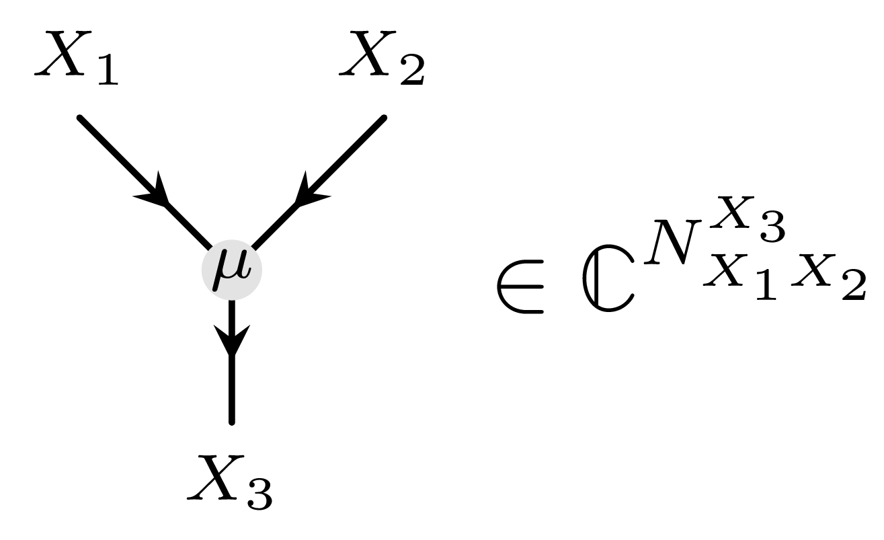
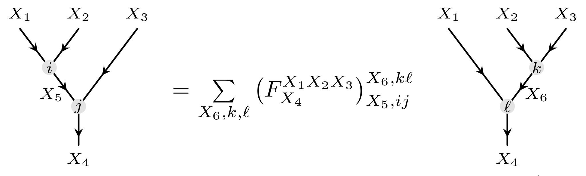

Introduction
The manual has been divided into different sections in an attempt to break down the information the user requires to use MultiTensorKit.jl. We start off with a short summary of fusion category theory. Users familiar with TensorKit.jl may have read the Optional introduction to category theory in the documentation of TensorKit; this section can then largely be skipped. Be aware that notation may differ from the literature.
Afterwards, the extension to multifusion categories is explained, and its relation to (bi)module categories over fusion categories is shown.
Fusion category theory
The aim of this section is to explain the bare minimum required to proceed to the next section on multifusion category theory and bimodule categories. More details can be found in the TensorKit documentation or the book Tensor Categories (Etingof et al., 2016).
Let us start simple and introduce the fusion ring $\mathcal{C}$ in a black-box manner. This ring
- consists of finitely many simple objects $\{ X_1, X_2, ..., X_R \}$, with $R$ the rank of the fusion ring,
- which can be fused with one another: $X_i \otimes X_j \cong \sum_k N_{ij}^k X_k,$ introducing the N-symbol $N_{ij}^k \in \mathbb{N}$ in the fusion rules,
- contains a unique unit object $1_\mathcal{C}$ which satisfies $1_\mathcal{C} \otimes X_i \cong X_i \otimes 1_\mathcal{C} \cong X_i$ for all objects $X_i \in \mathcal{C}$,
- has a dual object $\overline{X}$ for every object $X$ such that $X \otimes \overline{X} \cong \overline{X} \otimes X \cong 1_\mathcal{C} \oplus ...$, generalising the notion of the inverse element.
To extend the fusion ring to the fusion category, we need to add the following structure:
- Consider only the representatives of isomorphism classes of simple objects $\mathcal{I}_\mathcal{C}$,
- The associator $F^{X_iX_jX_k}: (X_i \otimes X_j) \otimes X_k \xrightarrow{\sim} X_i \otimes (X_j \otimes X_k)$ which fulfills the famous pentagon equation,
- Morphisms between (simple) objects $\text{Hom}_\mathcal{C}(X_i, X_j)$, which are empty vector spaces unless the objects are isomorphic, the latter then giving $\mathbb{C}$,
- More general morphisms $\text{Hom}_\mathcal{C}(X_i \otimes X_j, X_k) \cong \mathbb{C}^{N_{ij}^k}$.
This way, we can describe fusion categories by a triple $(\otimes, 1_\mathcal{C}, F)$ of $\mathcal{C}$ defining its monoidal product, unit object and monoidal associator, the latter also commonly called the F-symbol. In particular, the simple objects have their respective quantum dimensions $d_i = \dim(X_i)$ which form their own one-dimensional representation of the fusion algebra: $d_i d_j = \sum_k N_{ij}^k d_k$. In particular, the unit object always has quantum dimension 1, and all other quantum dimensions are larger or equal to one. These quantum dimensions are encoded in the F-symbol. The isomorphisms instead of the equalities are a technical detail, so we drop that notation.
Vectors in these hom-spaces are graphically denoted as living in the trivalent junction
With the F-symbol, we can perform F-moves:
TensorKit requires the F-symbols to be unitary. This way, we can interpret the F-symbol $F^{ijk}_l$ as a unitary matrix, and the F-move as a unitary basis transformation. Unitarity is also useful from a diagrammatic point of view because the category is then equipped with a pivotal and spherical structure. This essentially means that morphisms can be drawn and moved around freely on a 2-sphere, such that vector spaces can be moved freely from domain (codomain) to codomain (domain).
Examples
$\mathsf{Vec_G}$ and $\mathsf{Rep(G)}$
Colloquially speaking, category theory attempts to generalise mathematical structures and their relations in a way that different structures can be treated in an equal manner. This is noted in particular as fusion category theory encompasses not only finite and compact groups, but also their representations. We show a table sketching how these are put on equal footing categorically.
| $\mathsf{Vec_G}$ | $\mathsf{Rep(G)}$ | Categorical generalisation |
|---|---|---|
| $G$-graded vector spaces $V_1, V_2, ...$ | Representations of $G$ $(V_1, \pi_1), (V_2, \pi_2), ...$ | Objects |
| $G$-graded preserving linear maps $\phi: V \rightarrow W$ | Intertwiners $f: V_1 \rightarrow V_2$, $f \circ \pi_1 = \pi_2 \circ f$ | Morphisms $\text{Hom}_\mathcal{C}$ |
| 1d subspaces $\mathbb{C}_{g_1}, \mathbb{C}_{g_2}$: $\text{Hom}_{\mathsf{Vec_G}}(\mathbb{C}_{g_1},\mathbb{C}_{g_2}) = \delta_{g_1g_2}$ | Irreps: $\text{Hom}_{\mathsf{Rep(G)}}(\rho_i,\rho_j) = \delta_{ij} \mathbb{C}$ (Schur) | Simple objects: $\text{Hom}_{\mathcal{C}}(a,b) = \delta_{ab}\mathbb{C}$ |
| $G$-graded tensor product $(V \otimes W)_g = \oplus_{hk=g} V_h \otimes W_k$ | $\pi_i \otimes \pi_j \simeq \oplus_i N_{ij}^k\rho_k$ | Direct sum, monoidal product, fusion rules, multiplicity |
| $\mathbb{C}_1 \otimes W \simeq W \simeq W \otimes \mathbb{C}_1$ | Trivial rep 1: $1 \otimes \rho = \rho = \rho \otimes 1$ | Monoidal unit $1_\mathcal{C}$ |
| $\mathbb{C}_g \otimes \mathbb{C}_{g^{-1}} = \mathbb{C}_1 = \mathbb{C}_{g^{-1}} \otimes \mathbb{C}_g$ | $\pi \otimes \overline{\pi} = 1 \oplus ...$ | Dual object |
| $F:(V \otimes W) \otimes U \xrightarrow{\sim}V \otimes (W \otimes U)$ | $F: (\pi_1 \otimes \pi_2) \otimes \pi_3 \xrightarrow{\sim} \pi_1 \otimes (\pi_2 \otimes \pi_3)$ | F-symbol |
$\mathsf{Fib}$ and $\mathsf{Ising}$
Arguably the simplest fusion category besides the familiar groups or representations of groups is the Fibonacci fusion category. This contain 2 simple objects $1$ and $\tau$, with non-trivial fusion rule $\tau \otimes \tau = 1 \oplus \tau$. This fusion category is in fact braided as well, and actually modular.
Another simple fusion category is the Ising category, commonly denoted $\mathsf{Ising}$. 3 simple objects form this category, namely $\{1, \psi, \sigma\}$, where $1$ and $\psi$ behave like the trivial charged representations of $\mathbb{Z}_2$, while $\sigma$ is the $\mathbb{Z}_2$ extension of this. The fusion rules reflect these: $1 \otimes \psi = \psi = \psi \otimes 1, \sigma \otimes X = \sigma = X \otimes \sigma$ for $X = 1, \psi$, and $\sigma \otimes \sigma = 1 \oplus \psi$. This fusion category is also modular. Both these modular fusion categories are already implemented in TensorKitSectors.